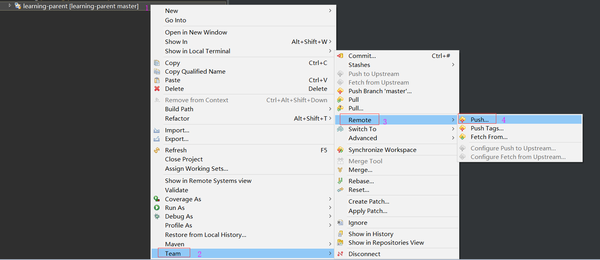

第一步：在Github上创建空仓库learning
第二步：创建父工程项目learning-parent（learning-parent一定要是maven的pom工程）
第三步：删除父工程项目learning-parent中的src文件夹
第四步：父工程项目learning-parent中新建.gitignore文件并加入内容
第五步：将父工程项目learning-parent所在的项目文件夹变为本地仓库
第六步：提交父工程项目learning-parent到本地仓库
第七步：提交本地仓库到远程仓库（非常关键，这一步可以实现本地仓库名与远程仓库名不一样的效果）

第八步：观察远程仓库的变化
第九步：添加子模块并上传到远程仓库中
第十步：继续按照第九步来添加其它子模块
第十一步：这一步是需要拉取代码的开发人员或者有代码洁癖的架构师做的
为啥要有这一步呢？主要开发人员需要拉取远程仓库到本地或者架构师忍受不了本地仓库与远程仓库名称不一致而做的
下面以架构师的角度来操作，开发人员拉取远程仓库的步骤基本是一致的：
首先把Eclipse中的相关项目都删掉，本地仓库也删掉
然后克隆远程仓库到本地
最后通过导入已有maven项目的方法从本地仓库导入项目到Eclipse中（就是在working set中点右键import project）